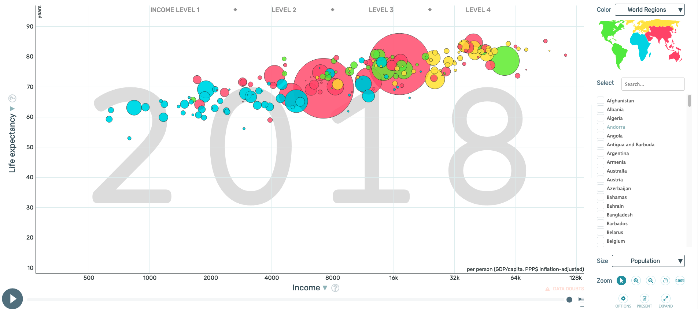
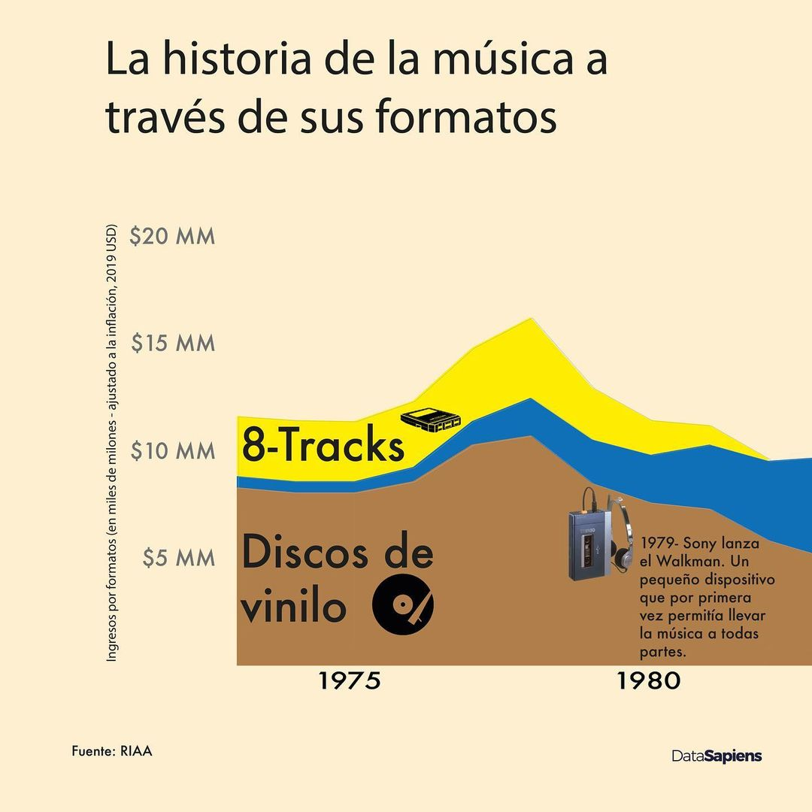
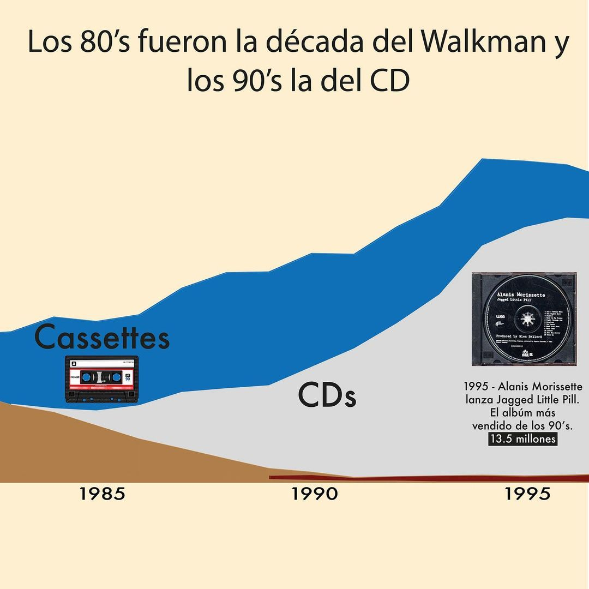
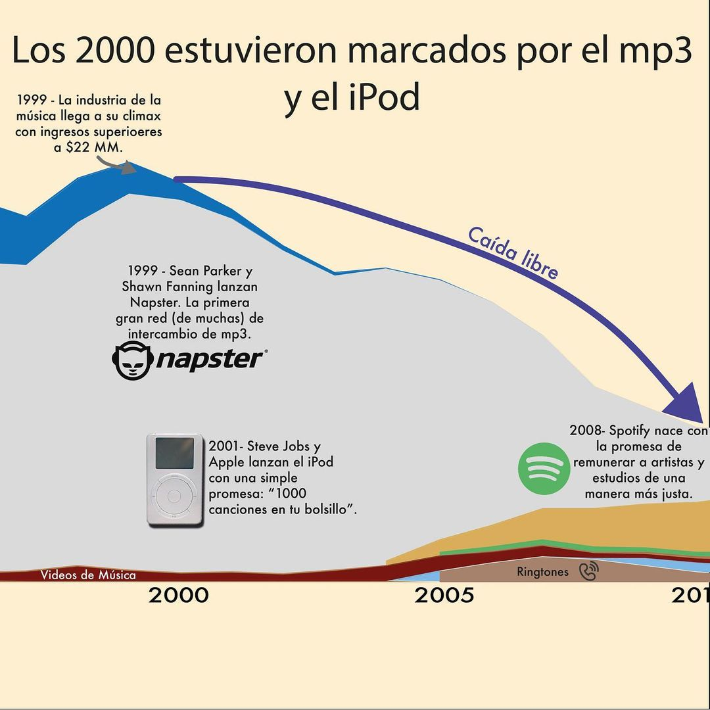
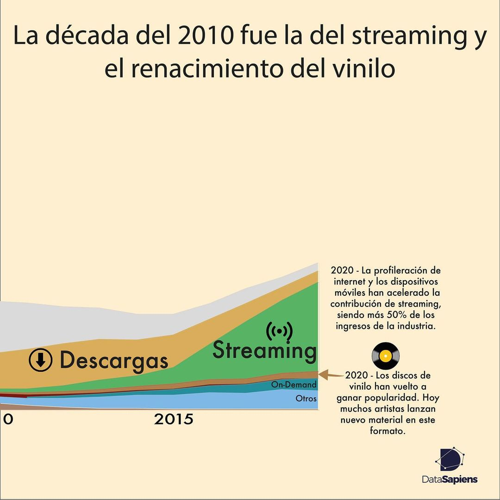

¡Hola 👋! Espera mientras comienza la sesión.
Antes que todo, ¿cómo están?
Visualización de Información
IIC2026 2021-2
Percepción
Visualización de Información
IIC2026 2021-2
Contenido
Contenido
1. Percepción visual
2. Atención preatentiva y organización perceptiva
3. Magnitud sensorial y juicio relativo
4. Criterios de análisis de canales
Codificación visual y de interacción
- Definir el cómo.
- Idiom: enfoque distintivo de codificar información o manipularla.
- Hay decisiones visuales y decisiones de interacción.
Principio de expresividad
Principio de efectividad
Principio de expresividad
Naturaleza de codificación ~ Naturaleza de dato
Principio de efectividad
La importancia de un atributo debe corresponder a la prominencia del canal utilizado, es decir, cuan perceptible es.
Ranking de canales

(Fuente: Libro "Visualization, Analysis and Design" )
Fenónemos de experiencia humana
- Percepción visual
- Atención preatentiva
- Organización perceptiva
- Magnitud sensorial
- Juicio relativo
Fenónemos de experiencia humana
- Percepción visual
- Atención preatentiva
- Organización perceptiva
- Magnitud sensorial
- Juicio relativo
Estas son una generalización de la experiencia humana, pero siempre hay excepciones.
Criterios de análisis de canales
Exactitud
Discriminalidad
Separabilidad
Pop out
Agrupación
¡Mini actividad grupal!
¡Mini actividad grupal!
Nos separaremos en grupos brevemente (5 minutos de discusión) para hacer críticas sobre algunos casos de visualizaciones.
¡Mini actividad grupal!
Nos separaremos en grupos brevemente (5 minutos de discusión) para hacer críticas sobre algunos casos de visualizaciones.
Deben consensuar como grupo y definir una crítica por caso. Aspectos a considerar en cada crítica:
- Debe hacer referencia a alguno de los criterios de análisis de canales (exactitud, discriminalidad, separabilidad, pop out o agrupación)
- Puede ser tanto positiva como negativa. Un caso aplica un criterio de forma adecuada o correcta, o lo contrario.
Discutiremos en grupo luego sus críticas.
¡Mini actividad grupal!
Ejemplo: Este caso presenta buen uso de pop-out, ya que usa saturación de color para llamar la atención a ciertas secciones de forma preatentiva.
Ejemplo: Este caso podría mejorar en términos de exactitud, utiliza área para codificar un atributo relevante en el caso en vez de un canal más efectivo como el largo unidimensional.
Caso 1

(Fuente: Publicación en WTFViz )
Caso 2
(Fuente: Herramienta Gapminder )
Caso 3

(Fuente: Publicación en WTFViz )
Caso 4 (Visualización del día)
(Fuente: Publicación en Instagram de datasapies )
Próximos eventos:
Recuerden responder los Cuestionarios asociados a esta semana y anteriores.
Jueves 2 de septiembre se publica enunciado de Entrega 1.
Jueves 9 de septiembre se publica enunciado de Hito 1.
Próximamente: Introducción a JavaScript y D3.js (jueves 2 de septiembre).